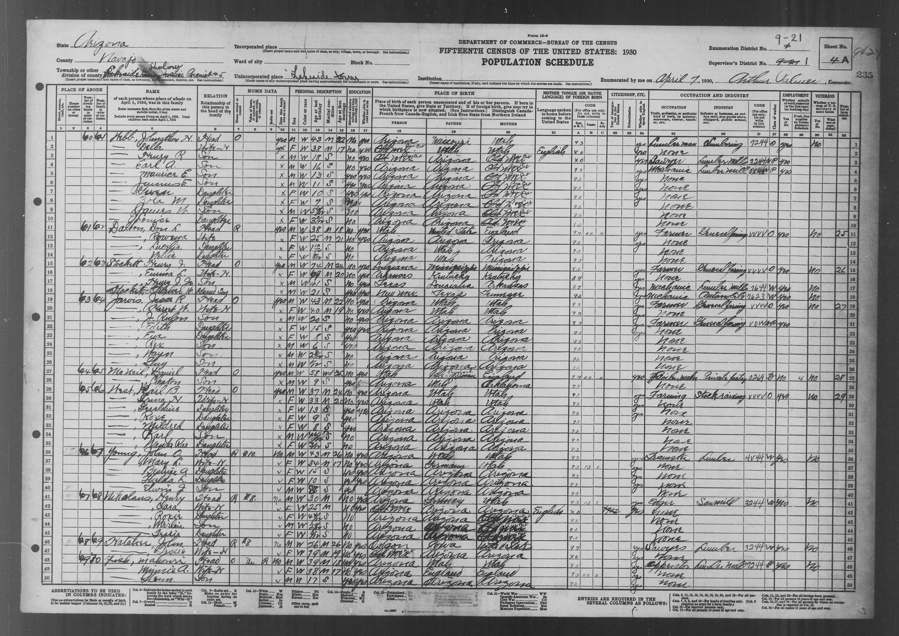

| Line | Name | Relationship | Sex | Color | Age | Marital condition | Age at first marriage | Birthplace | Father's birthplace | Mother's birthplace | Occupation | Industry | |---|---|---|---|---|---|---|---|---|---|---|---|---| | 1 | Webb, Johnathon H. | Head | M | W | 43 | M | 22 | Arizona | Missouri | Utah | Lumberman | Lumbering | | 2 | — Della | Wife-H [second designation uncertain] | F | W | 38 | M | 17 | Old Mex [Mexico cit added/overwritten] | Utah | Utah | None | [blank] | | 3 | — Henry R | Son | M | W | 18 | S | [blank] | Old Mex | Arizona | Old Mex [Mexico cit annotation] | Sawyer | Lumber Mill | | 4 | — Earl A. [reading; indexed Earl A] | Son | M | W | 16 | S | [blank] | Arizona | Arizona | Old Mex [Mexico cit annotation] | Mechanic | Lumber Mill | | 5 | — Maurice E | Son | M | W | 13 | S | [blank] | Arizona | Arizona | Old Mex [Mexico cit annotation] | None | [blank] | | 6 | — Junius E | Son | M | W | 11 | S | [blank] | Arizona | Arizona | Old Mex [Mexico cit annotation] | None | [blank] | | 7 | — Gwen | Daughter | F | W | 10 | S | [blank] | Arizona | Arizona | Old Mex [Mexico cit annotation] | None | [blank] | | 8 | — Zola M | Daughter | F | W | 7 | S | [blank] | Arizona | Arizona | Old Mex [Mexico cit annotation] | None | [blank] | | 9 | — James W | Son | M | W | 5 5/12 [fraction uncertain] | S | [blank] | Arizona | Arizona | Old Mex [Mexico cit annotation] | None | [blank] | | 10 | — Louise | Daughter | F | W | 3 0/12 [fraction uncertain] | S | [blank] | Arizona | Arizona | Old Mex [Mexico cit annotation] | None | [blank] | Household home owned (`O`); radio appears `yes`; lives on farm marked `no`. Home value blank. Henry and Della did not attend school; Henry R and Earl A did not attend school; Maurice, Junius and Gwen attended (`yes`); Zola, James and Louise marked `no`. Literate (`yes`) for Henry, Della and children Henry R through Gwen; younger children's cells blank. English-speaking `yes` for Henry, Della and older children; younger entries partly blank. Della's foreign-born mother tongue `English`; Henry R's cell blank. Immigration year and naturalization cells blank for Della and Henry R. Henry's employment class `O`, working `yes`, veteran `No`. Henry R and Earl A class `O`, working `yes` (codes retained visually in original; administrative code transcription not attempted). No farm schedule number for this household.